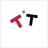
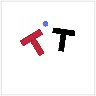
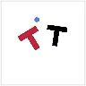
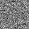
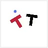
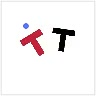
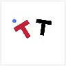

PushT
RGB · spatial epoch 30Ground truthBWM
SELECTED EXAMPLES
Train the query you deploy.
From observations and actions to future video.
One generator call. No pretrained generative teacher.
4 observed + 60 generated frames · free-running RGB prediction · 10 fps playback
Beckmann transport learns a terminal map.
BWM aligns its training with the exact query used to predict the future.




Noise z


Transport geometry + direct source supervision.
Training signals shape the endpoint; deployment stays one call.| Model / recipe | PushT | Robomimic Can | ||||
|---|---|---|---|---|---|---|
| MSE ↓ | Motion MSE ↓ | LPIPS ↓ | MSE ↓ | Motion MSE ↓ | LPIPS ↓ | |
| MSE U-Net 5 epochs | 0.0303 | 0.4008 | 0.0804 | 0.0051 | 0.0544 | 0.0104 |
| DriftWorld 5 epochs | 0.0314 | 0.4093 | 0.0790 | 0.0104 | 0.0769 | 0.0682 |
| BWM + spatial spatial stage · 30 epochs | 0.0098 | 0.1247 | 0.0280 | 0.0022 | 0.0242 | 0.0056 |
388 PushT / 30 Can held-out videos · 64-frame evaluation: 4 GT context frames, then 60 free-running predictions · 96 × 96 RGB. Metrics & protocols
Conditional endpoint maps extend to Bridge-V2 and RT-1.
The population-drifting variant delivers perceptual fidelity with one call per frame.
| Dataset / model | PSNR ↑ | LPIPS ↓ | FID ↓ | FVD ↓ | NFE / frame |
|---|---|---|---|---|---|
| Bridge-V2 · BWM spatial epoch 60 | 25.214 | 0.126 | 50.92 | 220.49 | 1 |
| Bridge-V2 · BWM + population drifting epoch 70 | 25.004 | 0.111 | 31.86 | 175.53 | 1 |
| RT-1 · BWM spatial epoch 60 | 27.585 | 0.106 | 36.48 | 250.01 | 1 |
| RT-1 · BWM + population drifting epoch 70 | 27.354 | 0.092 | 19.77 | 167.50 | 1 |
SD3 latent prediction · 4 GT context latents · 8-frame GT-reanchored chunks · metrics against VAE-reconstructed ground truth · FVD on the first 16 generated frames. Population variant: K = 8, DINOv3 + latent features. Metrics & protocols
Observations. Actions. Noise.
The future, in one call.